Kojima Wars
A multiplayer tactical FPS
Game overview
The game consists of class based FPS with team based conquest gameplay, much like conquest mode from Star Wars Battlefront, supported by RTS influenced support gameplay. Bases play a part in scoring points for your team, the more bases the more points you gain, in order to reach the maximum points or to have the most points before the time limit runs out. Bases that are captured can also be used to respawn at and have designated positions to place defence turrets.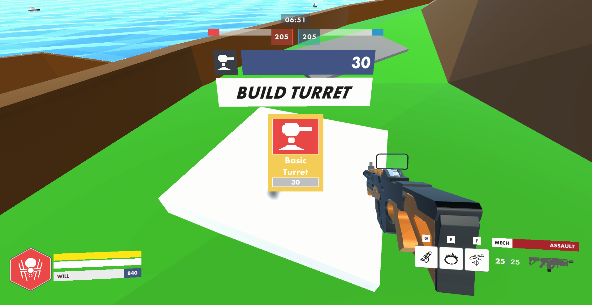
Bases also have tank factories to spawn in squadrons of AI tank units that can be directed towards bases on an in game map UI, and they can deal damage to enemy team members and help speed up the base capturing process. These units and turrets have a cost, however, which is passively earnt from bases under your control.
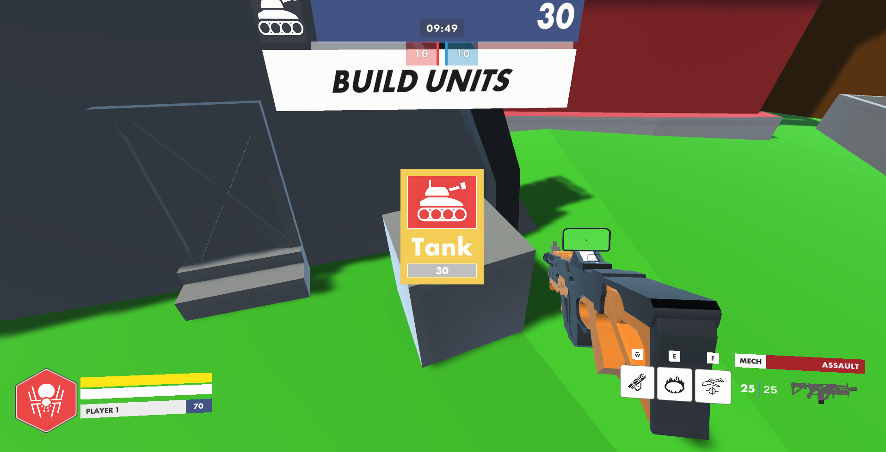
Gameplay was diversified thanks to the combat design team with the implementation of classes for the player to pick from when spawning in, and any captured base being valid to spawn into from the teams that handled the respawning logic.
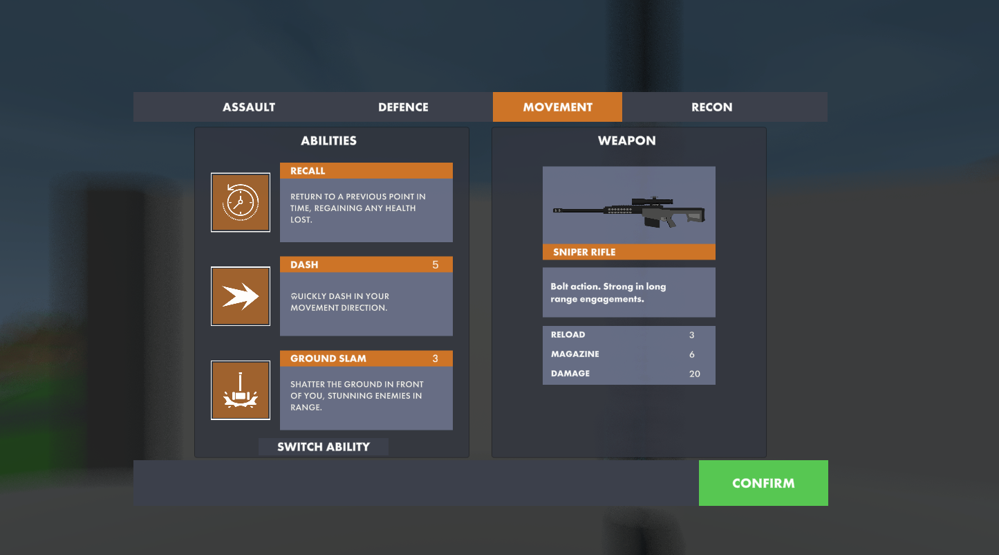
Development, tools & structure
Kojima wars was a cohort project to create a game based on Herzog Zwei set for us as a year group by our lecturers, with the aim of creating a larger game than we would be able to in our smaller groups, and to gain experience with team to team working. We had several systems handed out to each group that we took responsibility for ranging from setting up AI systems, map design, base capturing mechanics, combat systems, networking/lobby, two kinds of movement systems and transformations between those systems, respawn systems, team assignment and player name systems, points and timer systems, modelling and animation teams, audio systems, UI and UX design, and also debug and quality assurance tools.The cohort was a task set to every member of the the year group to simulate a studio working environment, using our own management ideas and methods that we had to work out and deal with any problems that arise. For the project we chose to work in Unity version 2020.3.26, and we made use of Netcode for GameObjects v1.0.0-pre.5 to handle networking, Unity Transport Package v1.0.0-pre.5 to help with Unity package communications, and Relay to host the game's network using the 1.0.0-pre.3 version.
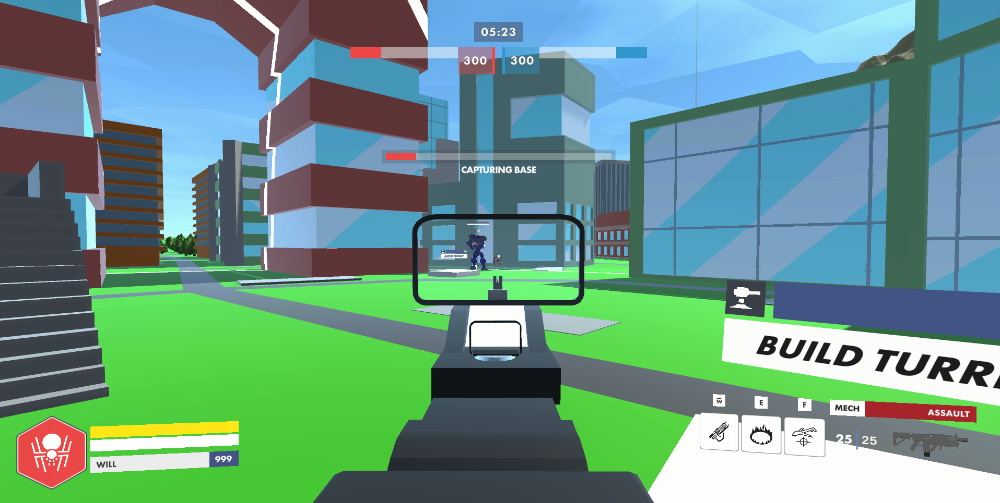
Our Team
We formed a team that was part of the larger cohort as a whole.In our team we worked on a range of systems, as well as assisting with testing and such for other group's systems. Initially we worked on setting up movement systems for the FPS part of the game, and worked with the jet movement team to devise the transformation system. The networking team came and added the RPC calls for server and client to our code and we began working on other systems as mentioned above. After this point we started to split apart on individuals from our team worked more with other teams to complete tasks for them rather than as a group like before.
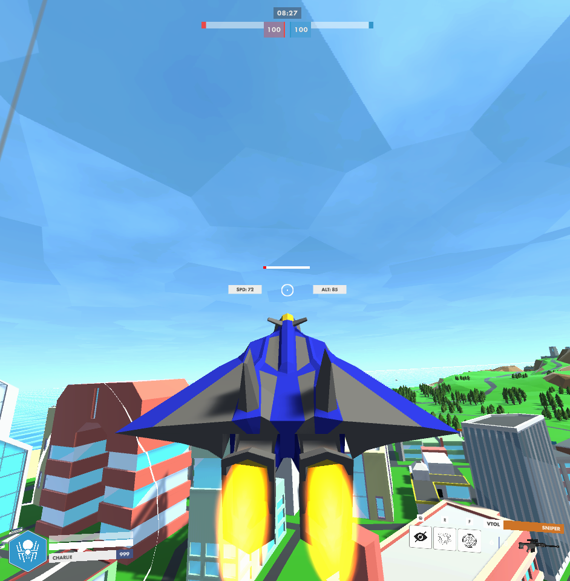
Our trailer:
My Contributions
In particular I worked on console commands in the debug menu, working across the game's network and also contributing a few models to the game for AI units.Command code examples:
Here are some examples of the commands I implemented for the debug console in game: The command is set up to take a name delegate that is what the console looks for after a '/' in the string. There is also a description delegate that works as a tool tip on the /help command which the command console prints out. The IsHidden boolean is used to determine if the command should appear in the list of commands under the help command.
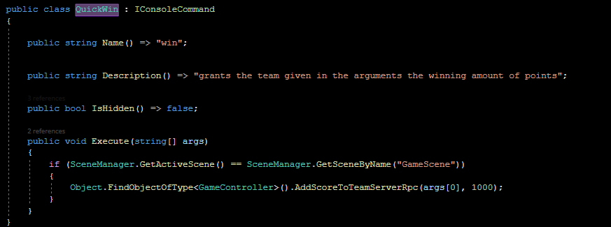
The function underneath is the code that runs once the command is entered into the console, in this case it checks for if the current scene is equal to the game scene and adds 1000 points to the team assigned to the object that excecuted the command.
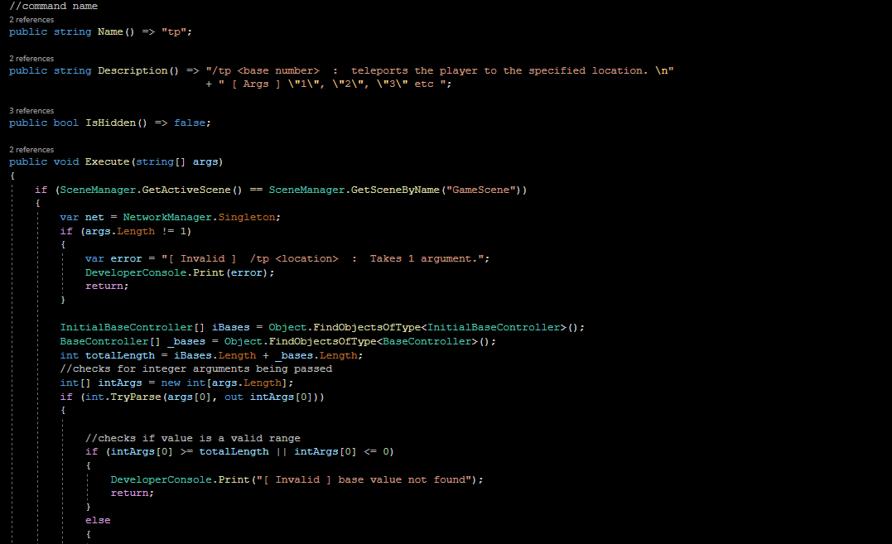 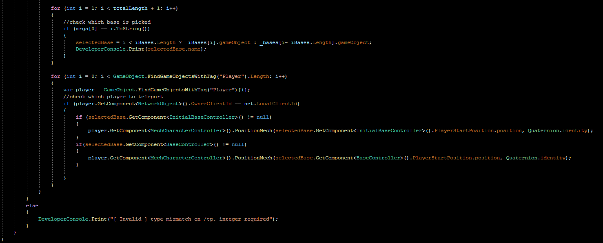
This is a teleport command to quickly move between bases, and the movement is syned up with the network and entirely functional. It was useful for testing other commands that were related to bases such as the instant base capture, making sure that all the bases were set up to capture properly and such.
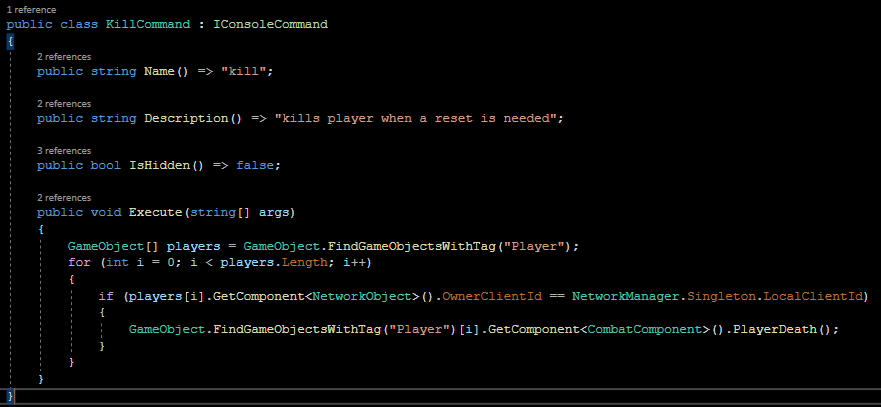
This is the kill self command, mainly used for making sure the respawn player functionality was working properly, and there is an extended version that looks through all the players and kills them.
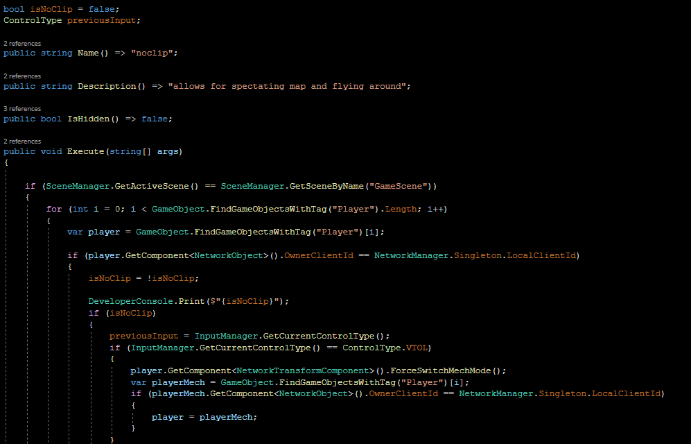 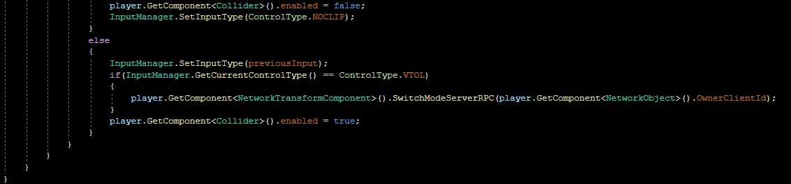
The no clip command uses the player mode enum that determines which control scheme the player will derive from, jet controls or humanoid/FPS controls, and adds an additional mode that moves around like a player would but also allows for raising and lowering the player position.
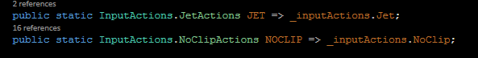
It also temporarily disables all the colliders on the player so that it doesn't get in the way, and this made it really useful for getting cinematic shots for gameplay trailers etc. The previous movement mode was also temporarily stored for when exitting out of the no clip mode. This command was also often used in tandem with the hide ui command which temporarily deactivated the local player's canvas component and hid the weapon too.
Download
Download it here and play in lobbies up to 10 with your friends